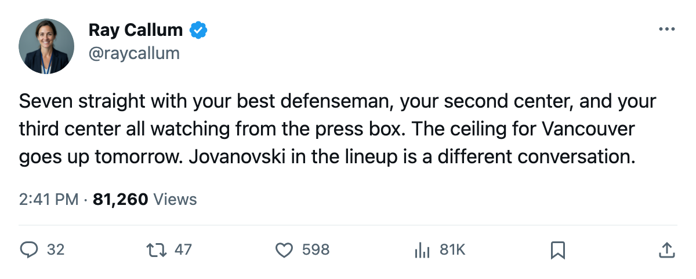
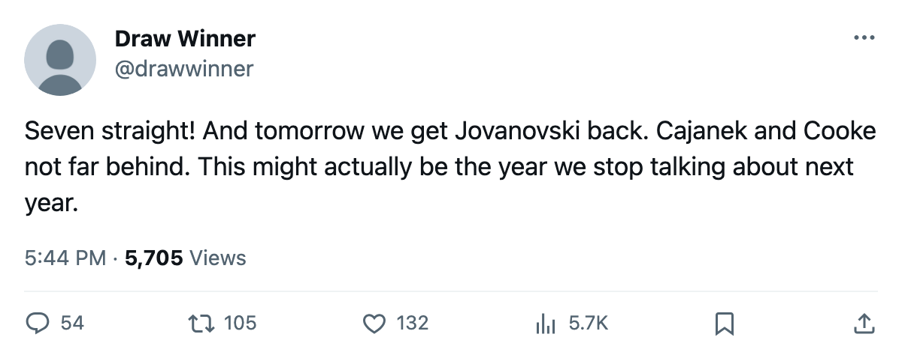

Numbers Game: Vancouver Has Won 7 Straight and Gets Its Best Defender Back Tomorrow
The longest active streak in the league belongs to a club with 280 days lost to injury. Ed Jovanovski returns on 2006-01-09.
 Ray CallumSenior correspondent · Home Ice Network
Ray CallumSenior correspondent · Home Ice Network
 Ed Jovanovski88 has an ankle the league placed between 2005-11-20 and 2005-11-24. His return date is tomorrow. He carries an 88 overall, the highest-rated player on
Ed Jovanovski88 has an ankle the league placed between 2005-11-20 and 2005-11-24. His return date is tomorrow. He carries an 88 overall, the highest-rated player on  Vancouver Canucks's injured list.
Vancouver Canucks's injured list.
Vancouver is on 7 straight wins, the longest active run in the league. Vancouver Canucks is 15-14-4 at 48 points, 6th in the West.  Colorado Avalanche has 49,
Colorado Avalanche has 49,  Calgary Flames has 47. The Western playoff line is a knife fight across five positions.
Calgary Flames has 47. The Western playoff line is a knife fight across five positions.
This club has not been healthy. Vancouver has logged 28 injury spells and 280 days lost, the 2nd-most in the league behind the Islanders' 348.  Petr Cajanek78 (leg) returns 2006-01-17.
Petr Cajanek78 (leg) returns 2006-01-17.  Matt Cooke76 (shoulder) on 2006-01-21. The 7 wins came without all three men, the top defenseman among them out since late November.
Matt Cooke76 (shoulder) on 2006-01-21. The 7 wins came without all three men, the top defenseman among them out since late November.
The schedule opens tonight. Ottawa visits in the first meeting of the season between these clubs. Ottawa is 10-16-9, 39 points, 12th in the East. Vancouver then hosts  Columbus Blue Jackets on 2006-01-10, plays at
Columbus Blue Jackets on 2006-01-10, plays at  St. Louis Blues on 2006-01-11, and hosts
St. Louis Blues on 2006-01-11, and hosts  Nashville Predators on 2006-01-14. Four games in 7 days, three at home.
Nashville Predators on 2006-01-14. Four games in 7 days, three at home.
 Dan Cloutier90 has started 32 of 40 games. Alexander Auld82 has 7, an 18 percent share.
Dan Cloutier90 has started 32 of 40 games. Alexander Auld82 has 7, an 18 percent share.
Jovanovski on the first pair, Cajanek back in 9 days, Cooke back in 13. The next four are against division clubs. Nashville Predators sits at 53 points, 3rd in the West. St. Louis Blues is 57 and 2nd.

